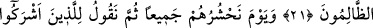
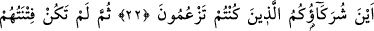
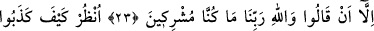
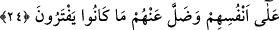

ZÂLİM KİMDİR?
21. Yalan sözlerle Allah’a iftira edenden veya O’nun âyetlerini yalanlayandan
daha zalim kimdir! Şüphe yok ki, zalimler kurtuluşa ermezler!
22. Unutma o günü ki, onları hep birden toplayacağız; sonra da, Allah’a ortak
koşanlara: nerede boş yere davasını güttüğünüz ortaklarınız? diyeceğiz.
23. Sonra onların mazeretleri, “Rabbimiz Allah hakkı için biz ortak koşanlar
olmadık!” demekten başka bir şey olmadı.
24. Gör ki, kendi aleyhlerine nasıl yalan söylediler ve (tanrı diye) uydurdukları
şeyler kendilerinden nasıl kaybolup gitti!
“Allah’a yalan uyduran” dan daha zalim kim olabilir? Zîra, yahudi ve hıristiyanlar
kitablarından, Nebi (a.s.)’ın vasıflarını çıkarmışlar ve onu hiç lâyık olmadığı çirkin
sıfatlarla anmışlardır. Bu ise Allah’a iftira etmektir. Yine onlar meleklere: “Bunlar
Allah’ın kızlarıdır” demişler ve Allah’a ortak koştukları putların “Allah katında
kendilerine şefaatçı olacaklarını” iddia etmişlerdir. Bunlara benzer daha pek çok
yakışıksız sözler söylemişlerdir. Yani, Allah’a yalan uydurandan daha zâlim kimse
yoktur.
“Ya da O’nun âyetlerini yalanlayandan daha zalim kim olabilir?” Onlar Kur’an’ı
ve mûcizeleri yalanlamışlar, Kur’an hakkında “Bu sihirdir.” demişlerdir. Tevrat’ı tahrif
etmişler ve ahir-zaman nebisi Muhammed (a.s.)’ın kitablarında yazılı olan sıfatlarını
değiştirmişlerdir. İşte bunlar da Allah’ın âyetlerini yalanlamak demektir.
Âyetteki “ya da” mânâsına gelen “ ” bağlacı, Allah’a yalan iftira etmekle âyetlerini
yalanlamanın her birinin zulümde son derece ileri gitmek olduğunu bildirmek içindir.
Nasıl böyle olmasın ki, onlar hem Allah’a iftirada bulunmuşlar, hem de ayetlerini
yalanlamışlardır. Allah’ın belirttiklerini değiştirmişler, belirtmediğini kitaplarına
kaydetmişlerdir.
Şunu kesin olarak bilin ki: “Zalimler asla kurtuluş yüzü görmezler.” Onlar,
korktuklarından kurtulamazlar ve istediklerini de tam olarak elde edemezler. İşte
zalimlerin hali böyle olunca, zulümde daha da ileri gidenlerin ve zulmün doruğunda